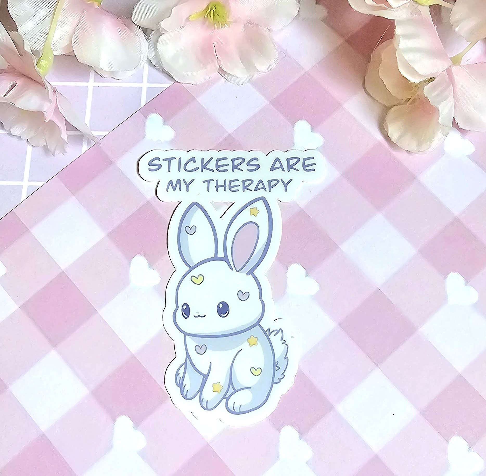
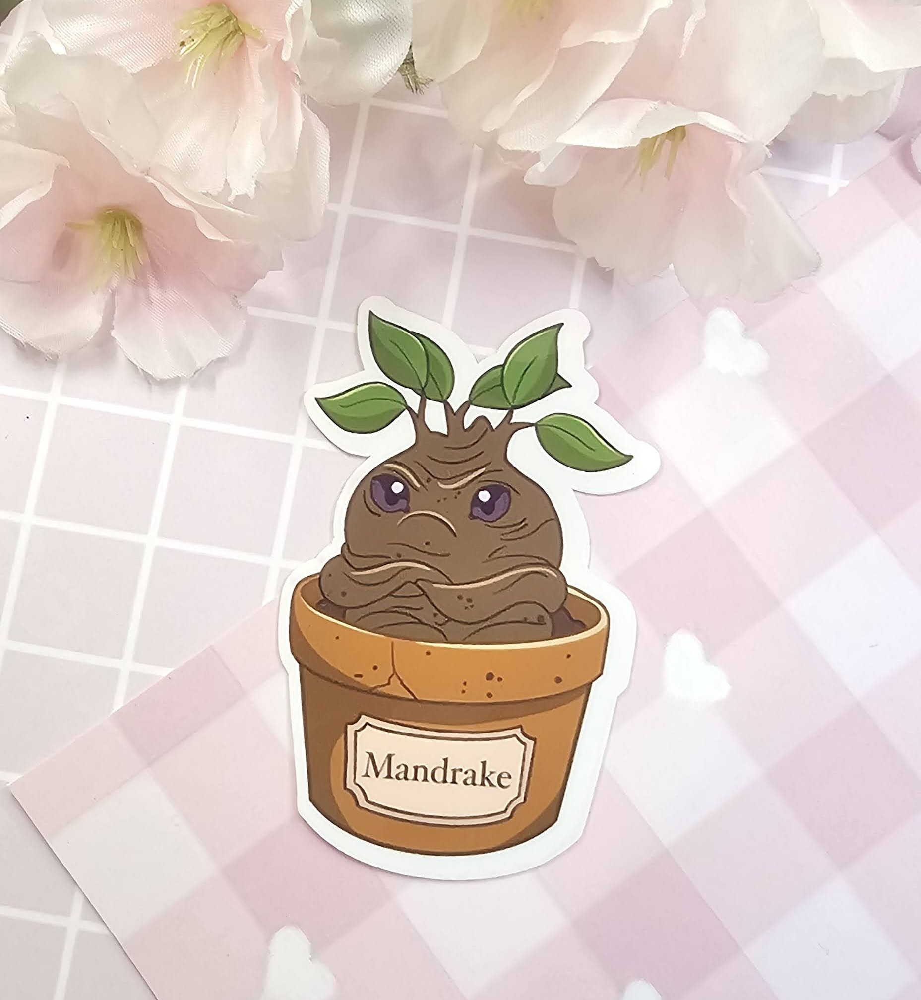

Original Stickers

Every sticker at Myrias DIYs is a little piece of my imagination brought to life! 💕 Each design is completely original—sketched, colored, and crafted by me with care and creativity. From dreamy characters to cozy everyday vibes, every sticker tells its own tiny story. ✨
They’re printed on high-quality, waterproof vinyl, so they’re as durable as they are adorable. Perfect for decorating your water bottle, laptop, journal, or anywhere that needs a sprinkle of personality and cuteness. 🌈
When you grab a sticker from Myrias DIYs, you’re not just getting something cute—you’re supporting small art, handmade passion, and one-of-a-kind designs you won’t find anywhere else. 💖🌸
Themed Stickers

At Myrias DIYs, every sticker starts as an idea straight from my sketchbook! 💕 Some of my favorite collections are inspired by the worlds I love most — Harry Potter, anime, and Disney. From magical creatures and charming wizards to iconic anime moments and nostalgic Disney cuteness, each design is hand-drawn by me with a playful, cozy twist. 🌙🎀
These aren’t just fan-inspired — they’re my personal take on the characters and stories that make us smile. Printed on waterproof, durable vinyl, they’re ready to bring a little fandom magic to your laptop, journal, or water bottle. 🌈💫